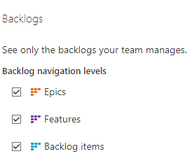

Azure DevOps General - Backlogs
Azure DevOps Boards'da "Genel - Backloglar" ayarlarını kullanarak aşağıdaki işlemleri gerçekleştirebilirsiniz:
- Kart türlerini ve alanlarını yapılandırma: Backloglar için kullanılacak kart türlerini ve alanları özelleştirebilirsiniz. Örneğin, gereksinimler, hatalar, özellikler gibi farklı kart türleri oluşturabilir ve bu kartlarda görüntülenecek alanları belirleyebilirsiniz.
- Sıra düzenlemesini yapılandırma: Backloglardaki kartların sıralanma yöntemini belirleyebilirsiniz. Örneğin, kartların önceliğe göre, oluşturulma tarihine göre veya başka bir kriter doğrultusunda sıralanmasını sağlayabilirsiniz.
- İş akışlarını yapılandırma: Backloglardaki kartların iş akışını belirleyebilirsiniz. Örneğin, kartların "Yapılacaklar", "Devam Eden", "Tamamlanan" gibi durumlar arasında nasıl ilerlemesi gerektiğini tanımlayabilirsiniz.
- Görünümleri yapılandırma: Backloglardaki kartların nasıl görüntüleneceğini özelleştirebilirsiniz. Kartları gruplamak, filtrelemek veya sütunları düzenlemek gibi işlemleri yapabilirsiniz.
- Gelişmiş ayarları yapılandırma: Backloglar için gelişmiş ayarları yapılandırabilirsiniz. Örneğin, kartlarda gösterilecek bilgileri özelleştirebilir, etiketleri yapılandırabilir veya kartların durumlarına göre otomatik olarak bir sonraki duruma geçişleri ayarlayabilirsiniz.
Bu Genel - Backloglar ayarları, Azure DevOps Boards'daki backlogları özelleştirmenizi ve ihtiyaçlarınıza göre şekillendirmenizi sağlar.
